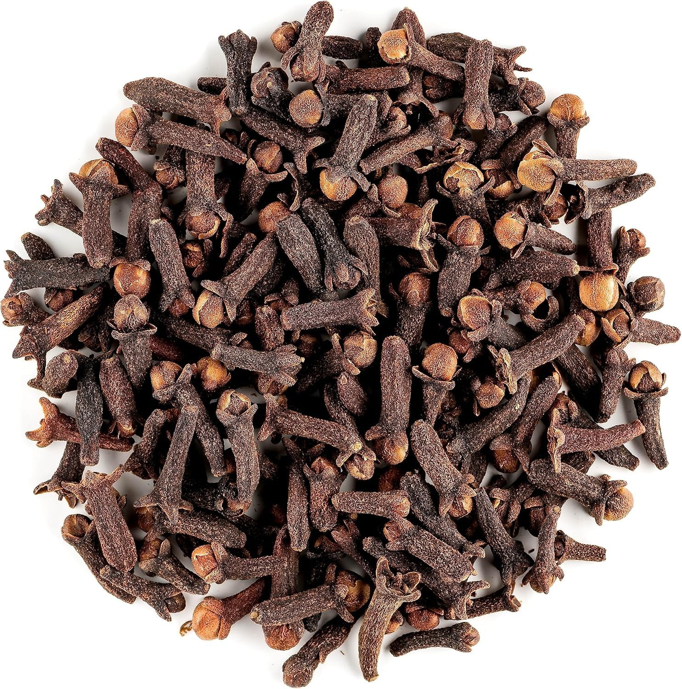

About Cloves
Cloves are harvested from the dried flower buds of the Syzygium aromaticum tree. Known for their intense flavor, they are used in spice blends, teas, curries, baking, and Ayurvedic applications. JontyMart offers handpicked cloves with uniform size and natural shine.
Key Features
- Strong aroma and spicy-sweet flavor
- Rich in eugenol and essential oils
- Bold size, unbroken buds, sun-dried
- No chemical polishing or additives
- Available in whole and powdered form
Applications
- Used in garam masala, biryani, pickles, cakes, and herbal teas
- Popular in Indian, African, and Middle Eastern cuisines
- Used in oral care, ayurvedic oils, and cosmetics
Why Choose JontyMart?
- Direct sourcing from Tamil Nadu and Kerala
- Cleaned, graded, and hygienically packed
- Bulk orders and custom branding options
- Fast shipping and international documentation support
Storage Instructions
Store in a dry, airtight container in a cool place. Avoid moisture to retain aroma and freshness. Best used within 18 months.